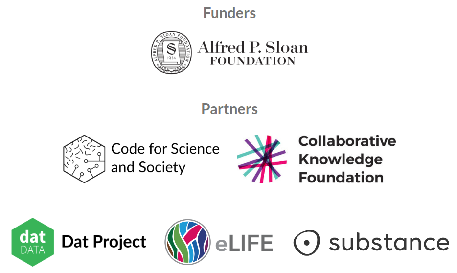

class: center, middle <img src="logo-name-beta.svg" width="400" /> #### FORCE 2017, Berlin, 26 October 2017 <div> <a href="https://twitter.com/NokomeBentley">@NokomeBentley</a> <a href="https://twitter.com/stencila">@stencila</a> </div> --- class: center, middle ### Creating reproducible research is difficult... particularly if you don't know how to code. --- class: center, middle <img src="tweets.png" height="600px"> --- class: center, middle ### Can we take reproducibility to the user... an "office suite" for reproducible research? --- <video class="centered" height="580px" controls="controls" autoplay="" loop=""> <source src="doc-screencast.mp4" type="video/mp4"> </video> --- <video class="centered" height="580px" controls="controls" autoplay="" loop=""> <source src="sheet-screencast.mp4" type="video/mp4"> </video> --- class: middle ### Not "just another office suite" silo, we're aiming for... - a **learning continuum** between clicking and coding (close integration with R, Python etc) - a **collaboration continuum** between clickers and coders (support for plain text formats e.g RMarkdown) - **interoperability** with existing tools (e.g. Jupyter, RStudio) - a **reproducibility continuum** across authoring, collaboration, editing, reviewing, publishing and reading --- class: center, middle ### Demo tonight: 18:00–20:00 ### http://community.stenci.la ### Thanks... 